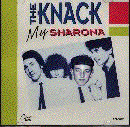
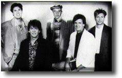
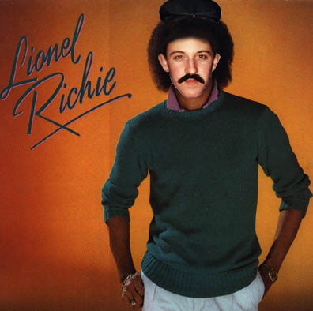
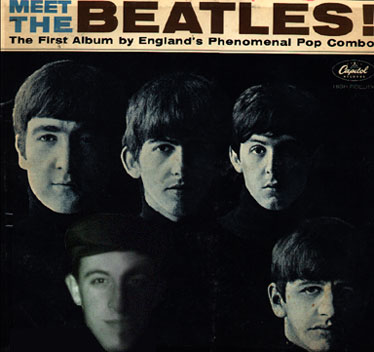
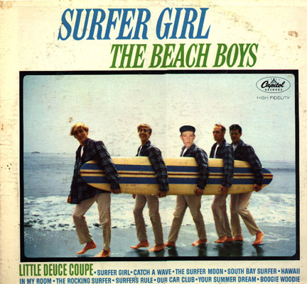
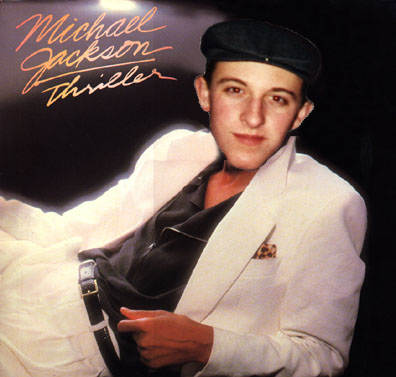

Pictures I Stole from the Public Library

Remember the band "The Knack?" They released the wonderfull, yet messed up song, "My Sherona."

Here we see The band "The Kingsmen." They delighted us with the lyrically messed-up song "Louie Louie."

This picture of Lionel Richie. Dancing on the ceiling, my ass.

Sure, we all loved the beatles... All five of them. Ever wonder where they got those crazy ideas about yellow submarines or some chick with kaleidoscope eyes?

Here is the Beach Boys. Gosh, that one in the hat sure looks out of place...

Gosh, even Michael Jackson! Well, I suppose with songs like "Beat It" and "Bad", there had to be some sort of foul play going on.